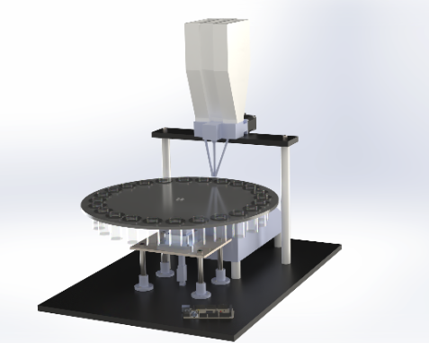
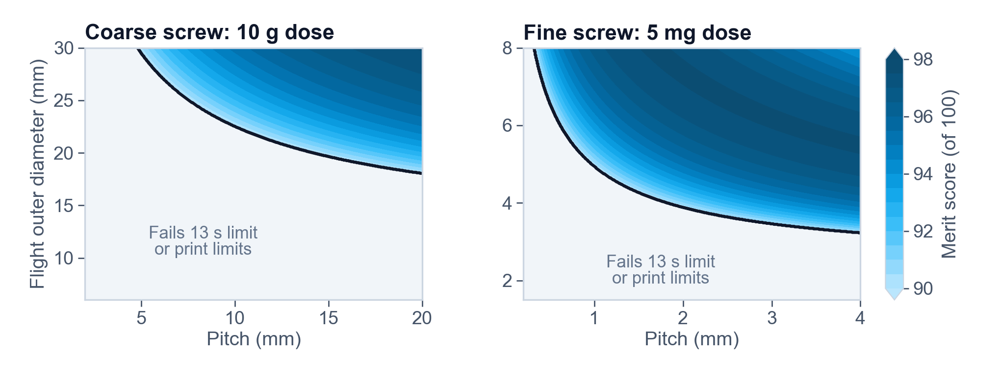

Senior design · Team of 5 · August 2026 to present
Automated Multi-Powder Vial-Filling System
A machine that weighs out powders for lab experiments. Weighing solids by hand slows down iterative lab work; this fills 24 vials with 3 powders from a recipe so a lab can run more experiments.
My role: design lead, owning the mechanical design and CAD, and backup electronics lead for controls and the user interface.
- CAD. Designed the full machine in SolidWorks: 148 components and 45 unique parts, including the feeders, chutes, vial carousel, and frame.
- Manufacturing. Parts are a mix of machined aluminum, resin prints, and purchased stock. When the housings came back with different bores, I re-sized the augers to match.
- Precision. The fine feeder is designed to meter 5 mg doses within ±1 mg and the coarse feeder 10 g within ±5%. The machine is built; verification against these targets is tracked in the table below.
- Modeling. Wrote a Python model of feeder output to compare screw geometries, then checked it against the CEMA screw-conveyor formula and my CAD before parts were made.
Working with AI. Used Claude to write the model code and compare design options, then verified its output against an independent formula and my own CAD, catching dimension errors before parts were made. The decisions stayed mine.


Requirements and verification
| Requirement | Target | How it's verified | Status |
|---|---|---|---|
| Fine dose accuracy | 5 mg ± 1 mg | n = 22 fine doses, each weighed on a 0.1 mg reference balance. Pass: every dose within 5 ± 1 mg | Pending |
| Coarse dose accuracy | 10 g ± 5% | n = 22 coarse doses, each weighed on a 0.1 mg reference balance. Pass: every dose within 10 g ± 5% | Pending |
| Cycle time | ≤ 60 s per container | n = 24 consecutive doses, timed from carousel move to log entry. Pass: every cycle ≤ 60 s | Pending |
| Unattended operation | Full 24-vial, 3-powder recipe; ≥ 45 min | n = 1 full recipe run. Pass: all 24 vials completed with no intervention | Pending |
| Data logging | 100% of doses exported to CSV | All doses from the full run. Pass: CSV values match physical weighings for 100% of doses | Pending |
Requirements come from the client's engineering specification. Status updates as test results come in.